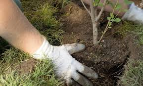
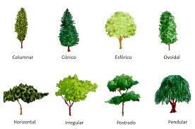
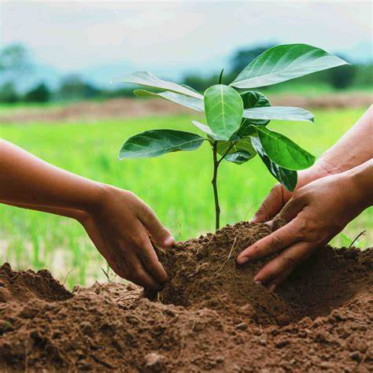
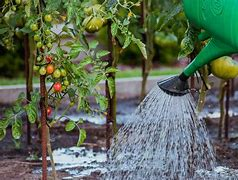

pagina de reforestacion
pagina de reforestacion

 pagina de reforestacion
pagina de reforestacion
Se debe asegurar que el suelo sea adecuado para el tipo de árbol que se va a plantar, lo que puede implicar la preparación del terreno, como la eliminación de malezas, la fertilización y la creación de hoyos para cada árbol.
Se deben elegir las especies de árboles adecuadas para el clima y tipo de suelo de la zona, así como el tamaño apropiado para la plantación.
Se deben extraer los árboles de sus macetas o envases de cultivo con cuidado y plantarlos en el terreno, asegurándose de que las raíces estén bien cubiertas y que el árbol esté en posición correcta.
Se debe regar los árboles después de la plantación y proporcionarles el cuidado necesario para que arraiguen y se desarrollen correctamente.
